Mo 2026-08-10
Basic Bike
- 10 min @80 W einrollen
- 30 min @100 W fahren
- 5 min @75 W ausrollen
- Bei zunehmendem Muskelkater oder schweren Beinen: Einheit beenden.
2026-08-10 bis 2026-08-16
Externen Schwimmplan absolvieren.
Externen Freiwasser-Schwimmplan absolvieren.
W32 umfasste sieben Aktivitäten mit insgesamt 212 TSS. Der spezifische Trainingsanteil bestand aus einem lockeren Lauf über 30:51 bei 6:06/km GAP und 131 bpm, zwei Schwimmeinheiten über zusammen 3.200 m sowie 3 × 9 min Bike @150 W. Die drei Bike-Intervalle lagen stabil bei 150 W und 141, 144 sowie 147 bpm, also im unteren Bereich der aktuellen Power-Z4 bei ansteigender, aber kontrollierter Herzfrequenz. Der lockere Lauf blieb überwiegend in Z1-Z2, weshalb er trotz kurzer Z6-Spitzen aus wechselndem Gelände und Sensorik als aerobe Erhaltungseinheit einzuordnen ist.
Der wesentliche Wochenreiz war das Canyoning vom 07.08. bis 09.08. mit 9:45 h, 107 TSS und bis zu 17.008 Schritten an einem Tag. Diese drei Einheiten sind keine sportartspezifischen Swim-, Bike- oder Run-Sessions, erhöhen aber die muskuläre, orthopädische und alltagsbezogene Ermüdung deutlich. Die physiologischen Erholungsmarker zeigen zum Wochenabschluss keine akute Warnlage: Am 10.08. lagen HRV bei 64 ms und der 7-Tage-Wert bei 65 ms innerhalb des 90-Tage-Korridors von 63-75 ms, der Ruhepuls bei 44 bpm und der Schlaf bei 8:25 h mit Score 90. Die kürzeren Nächte am 06. und 07.08. mit 6:52 h beziehungsweise 5:49 h sind durch die zwei folgenden guten Nächte kompensiert, rechtfertigen aber zusammen mit dem Outdoor-Block keine sofortige Belastungsspitze.
Der Load-Status hat sich von ATL 47, CTL 41, TSB -6 und ACR 1,143 am 03.08. auf ATL 33, CTL 39, TSB +5 und ACR 0,860 am 10.08. erholt. Gewicht und Körperfett sind seit dem 04.08. bis auf den Gewichtseintrag vom 10.08. unvollständig, daher lässt sich daraus kein belastbarer kurzfristiger Trend ableiten.
W32 hatte 212 TSS, davon allein 107 TSS aus Canyoning als muskulär und orthopädisch relevante Zusatzlast. Die objektiven Erholungsmarker erlauben lockere Bewegung, rechtfertigen aber keine Belastungsspitze direkt danach. Mit noch 26 Tagen bis Hannover ist es sinnvoll, die Schwimmkontinuität zu halten und mit Rad plus lockerem Lauf die Triathlonbewegungen zu pflegen. Die beiden Hyrox-Tage liefern voraussichtlich bereits viel Kraft-, Lauf- und Beinbelastung, sind aber kein Ersatz für race-spezifische Qualität. Deshalb bleiben Montag und Mittwoch klar aerob und Freitag frei. Nach dem Hyrox-Camp sollte die folgende Woche wieder gezielt mit einer Bike- und einer Laufqualität auf den olympischen Triathlon ausgerichtet werden.
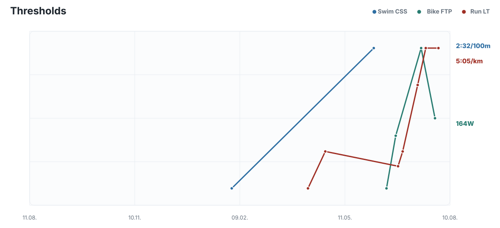
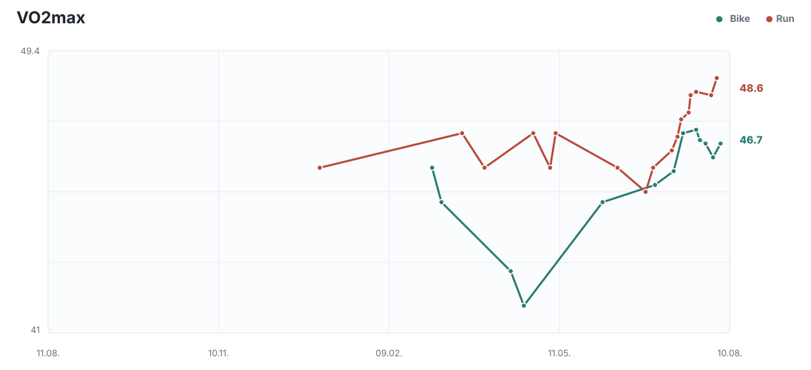
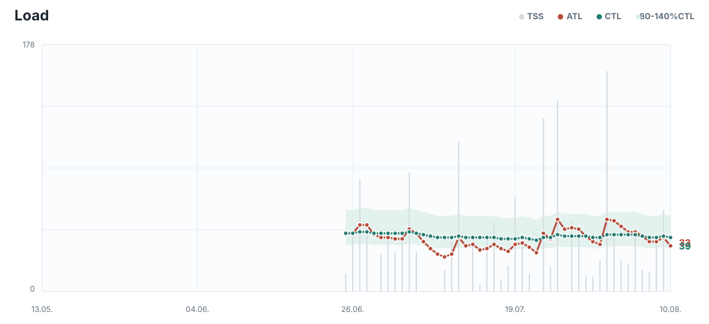
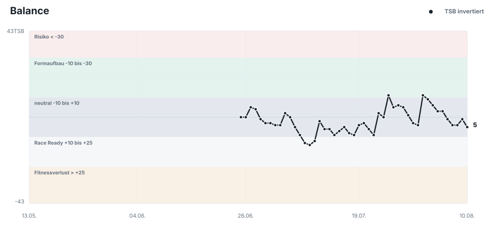
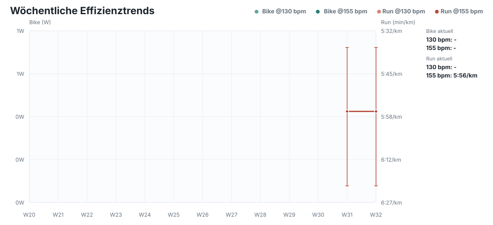
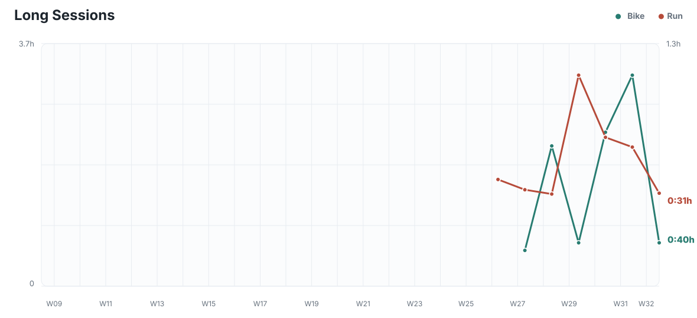
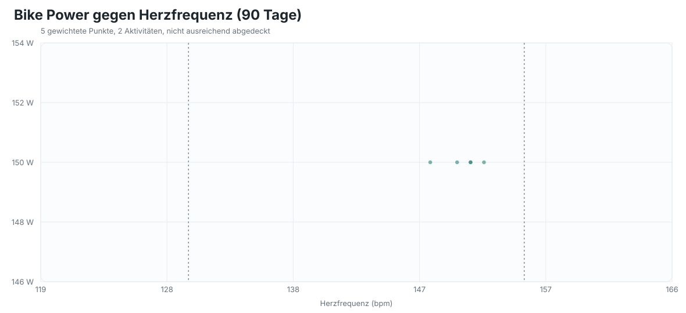
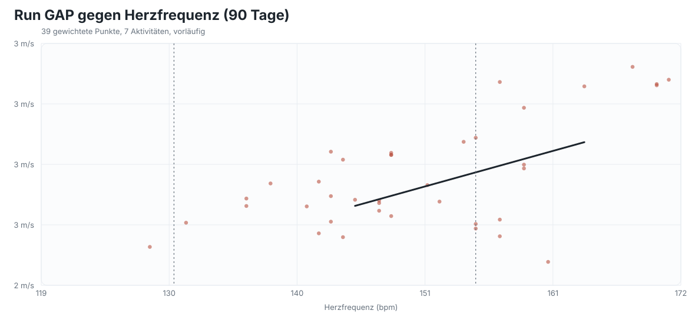
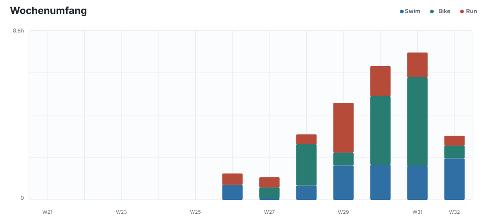
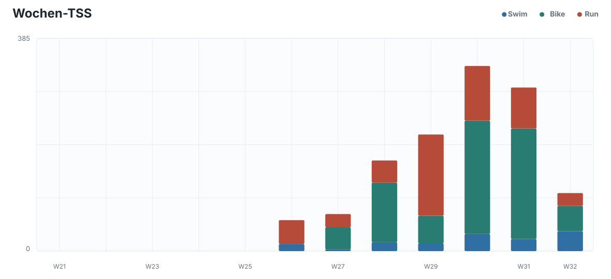
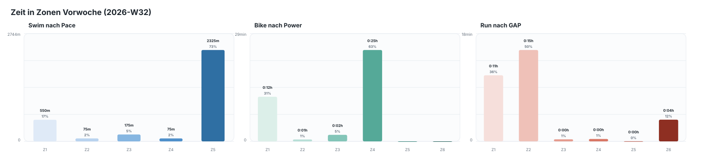
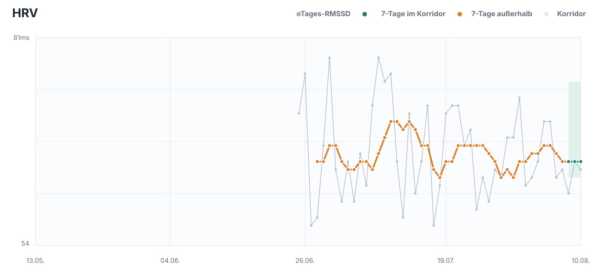
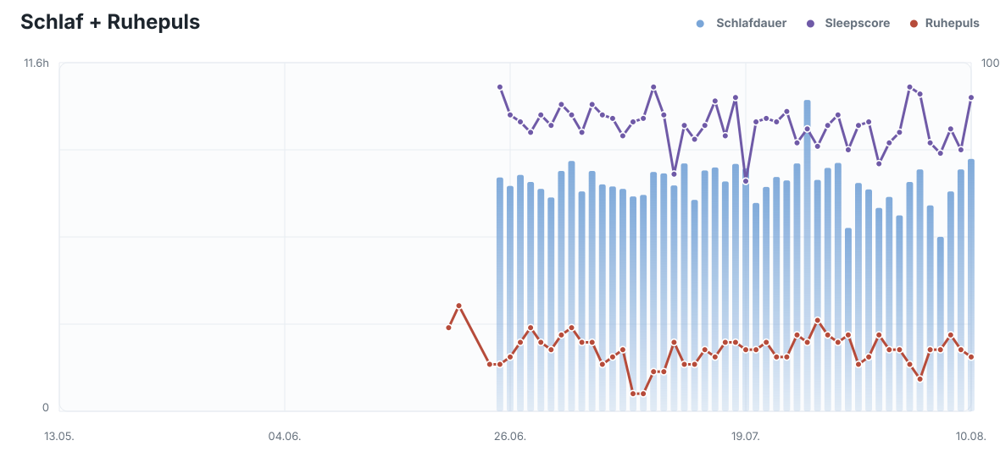
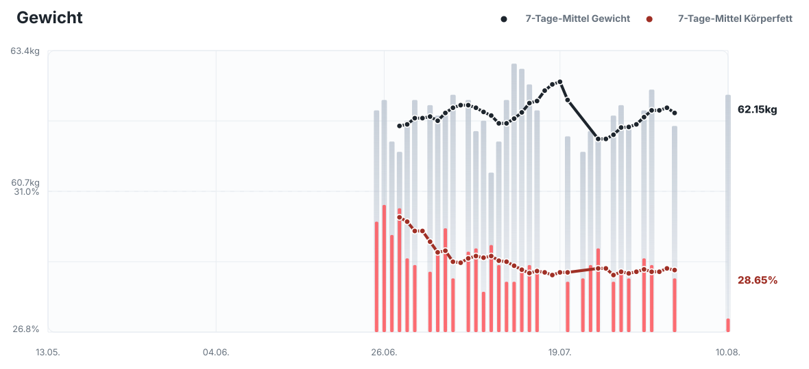
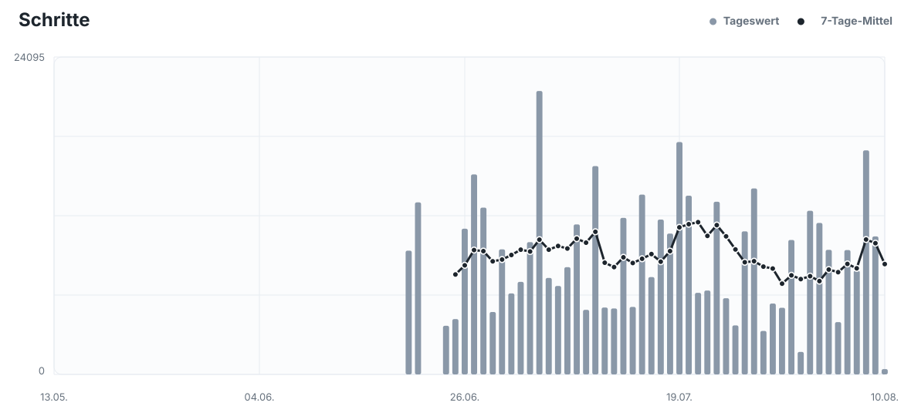